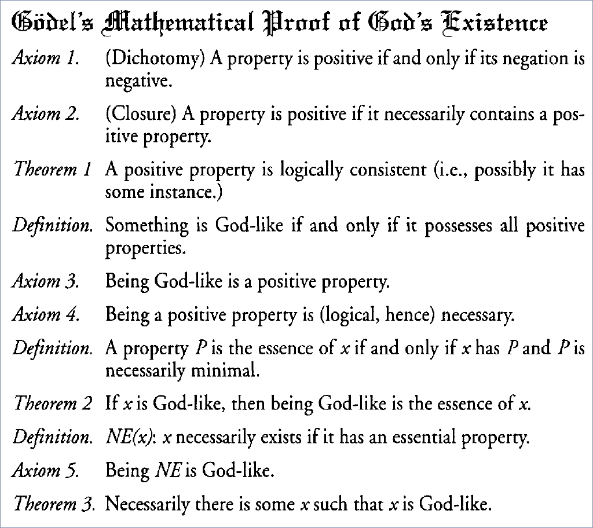

The Ontological Argument

Proofs of the Existence of God
- Zalta's first-order proof based on Anselm's argument
- Rushby's higher-order proof based on Anselm's argument
- Benzmüller's and Woltzenlogel-Paleo second-order modal proof
based on Gödel's argument
The Benzmüller and Woltzenlogel-Paleo Proof
- Formulae initially encoded in second-order modal logic
- Second-order modal logic translated to THF
- Incremental development using TPI
- Proofs discharged via SystemOnTPTP
See the press coverage, e.g.,
Der Spiegel